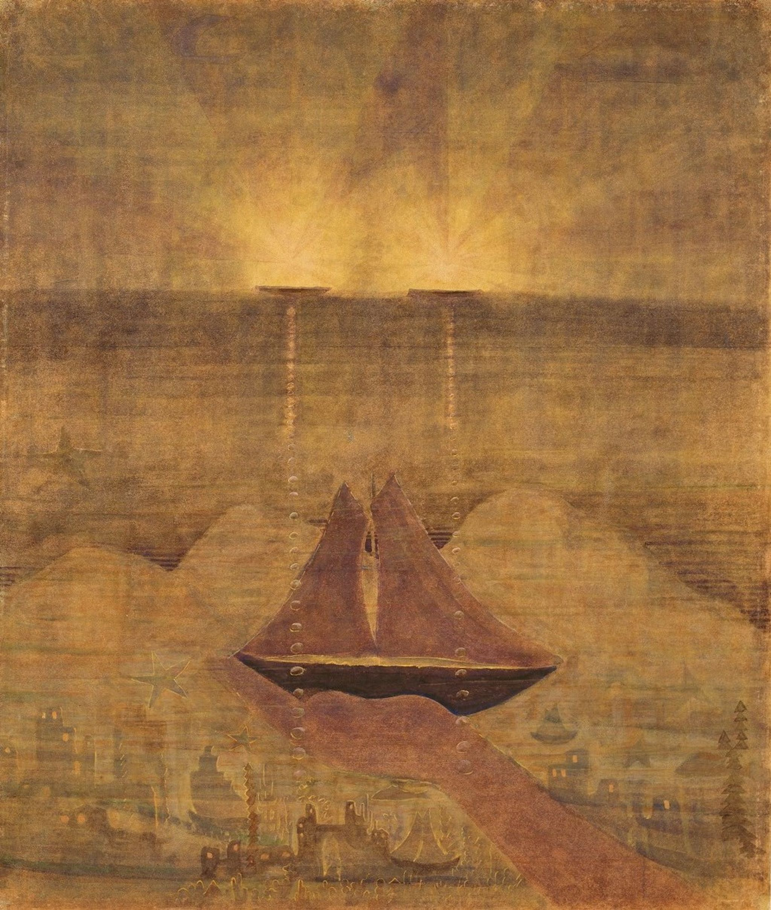
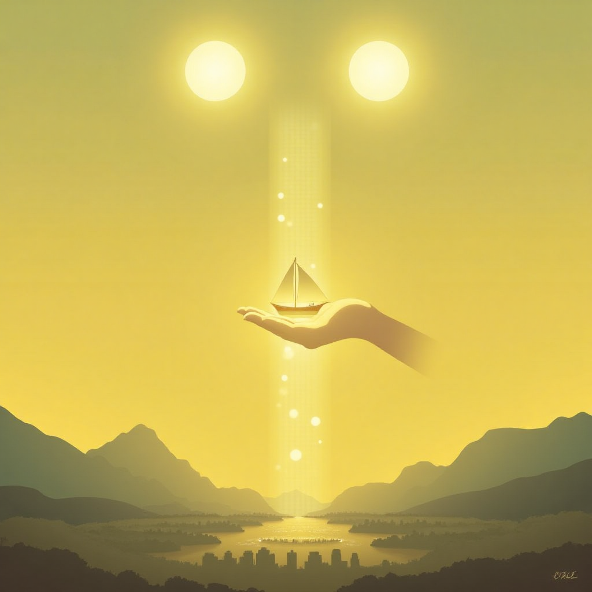

| Pagrindinis | „Raigardas. Triptikas" | „Sonata Nr. 5 (Jūros sonata). Andante.“ | „Saulė eina jaučio ženklu“ | „Šaulys“ |
|

|

|
|
JANINA DEGUTYTĖ
Čiurlionio jūros sonata ALLEGRO Vanduo toks žalsvas ir vaiskus — Lyg persunktas pavasario kvepėjimu. Vanduo auksinis ir vaiskus — Tartum sulaikęs saulės patekėjimą. Krantų kalneliuos medžiai sulapojo. Bet aš krantan negrįšiu, O žuvyte tau plaukiosiu prie kojų. Manęs juk nenuvysi?.. Balta žuvėdra virš tavų bangų Su melzganu šešėliu skrenda… Žemčiūgus — tavo šypsenas — renku… O bangos — žalsvos liepsnos — plaka krantą… |
ALLEGRO aprašymas lietuvių kalba Vanduo atrodo žalsvas, skaidrus ir gyvybingas, jis kvepia pavasariu. Saulės šviesa jį daro auksinį ir spindintį. Medžiai jau sulapojo, bet kalbantysis negrįš į krantą. Jis lyg žuvytė plauks šalia mylimo žmogaus kojų ir klaus, ar tas jo nenuvys. Virš bangų skrenda balta žuvėdra, mėlyname vandenyje matosi matosi jos šešėlis. Kalbantysis renka perlus, kurie simbolizuoja mylimo žmogaus šypseną. Tuo metu bangos plaka į krantą kaip žalsvos liepsnos. ALLEGRO aprašymas anglų kalba The water looks green, clear and alive, it smells of spring. The sunlight makes it golden and shining. The trees have already shed their leaves, but the speaker will not return to the shore. He will swim like a fish near the feet of his beloved and ask if he will not chase him away. A white seagull flies above the waves, its shadow is visible in the blue water. The speaker collects pearls, which symbolize the smile of his beloved. At that time, the waves beat against the shore like green flames. ALLEGRO aprašymas anglų kalba pritaikytas AI In this painting, we see a quiet, dreamy landscape. Two lights shine in the sky, resembling the sun or glowing disc-shaped objects, and their light is reflected in the water. A column of small bubbles runs through the center of the painting, leading downward to a hand. That hand holds a boat with two sails — it seems to float between dream and reality. At the bottom, a misty city stretches across the entire lower part, as if drawn in a dream. Everything is bathed in a soft yellowish-brown light, creating a sense of peace and mystery. Behind the city are mountains, and beyond the mountains lies yellowish water. |